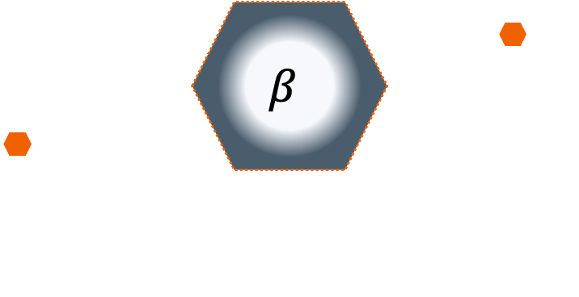

Aviso
Lo que aquí mostramos son
los escenarios que nosotros consideramos los más posibles; sin embargo, como cualquier cosa donde
interviene el azar y el comportamiento humano, el resultado final puede ser distinto a lo modelado.
Descargas
Descarga de gráficas
Descarga de datos